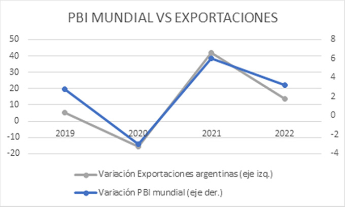
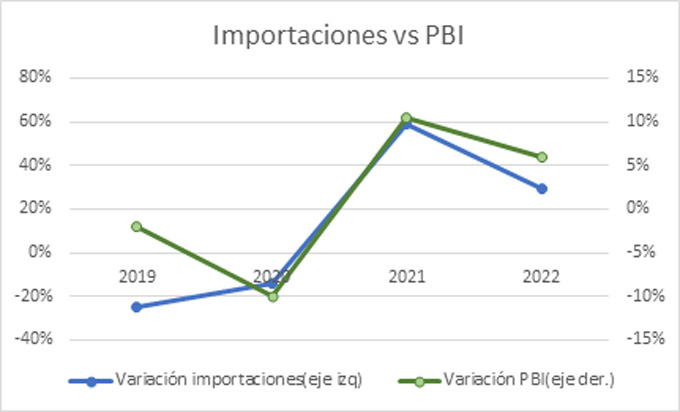

La actividad portuaria como eje del crecimiento económico. Un panorama general.
Lic. Leandro Moro
La evolución de la actividad económica argentina posee un fuerte correlato con el comercio internacional y
el movimiento de mercaderías en los puertos. Es importante darle seguimiento a esta relación para entender
la dinámica y determinar la política pública en aras de acompañar el aumento del bienestar nacional.
Algunos datos del contexto:
El consumo y la producción argentinos están relacionados en gran medida con la interacción con el resto del mundo.
De hecho, la suma de las exportaciones y las importaciones, son el equivalente a casi la mitad del PBI. Tomando
como base el año 2021, las exportaciones ascendieron a 580.021,19 millones de pesos. Las importaciones en el
mismo período alcanzaron los 666.550,24 millones. El PBI en el período ascendió a 2.756.842,740. Lo que resulta
una suma de Impo y Expo que, en 2021, representó el 45% del total del PBI. Los datos para los primeros 3 trimestres
de 2022, arrojan que este coeficiente es del 48%. Lo que muestra la continuidad de la estructura.
El crecimiento económico también guarda una relación profunda con el comercio internacional. En este punto, es
importante mostrar la relación entre crecimiento mundial y exportaciones argentinas y crecimiento argentino e
importaciones. En la teoría, uno de los determinantes de las exportaciones, es el crecimiento del resto del mundo.
A mayor ingreso exista en el exterior, se demandarán mas bienes y servicios domésticos. A la inversa sucede lo mismo,
a mayor nivel de ingreso nacional, mayor es la cantidad demandada de bienes y servicios en el extranjero. En la
práctica, en los años recientes, cuando el mundo en 2019 crecía 2,8%, las exportaciones argentinas lo hicieron 5,4%,
en 2020, en medio de la pandemia, el mundo decreció en un 3%, las exportaciones cayeron un 15,7%. Para 2021, el
crecimiento mundial fue 6%, y las exportaciones aumentaron un 42%, y finalmente en 2022, el crecimiento mundial fue
de 3,2%, mientras que las exportaciones crecieron un 13,5%.
Gráfico 1 - Variación del PBI mundial vs Variación de las exportaciones argentinas.

En base a datos del INDEC y el FMI
Mientras que, por el lado de la importación, la relación con el producto bruto interno está denominada por la
“proporción marginal a importar”, que es el comportamiento de las importaciones frente a cambios en el PBI.
En particular, en los años de crecimiento económico, 2021 y 2022, la economía se expandió 10,4% y 5,9% respectivamente,
mientras que las importaciones el mismo período aumentaron 59,10% y 29% respectivamente. Durante el ciclo contractivo, 2019
y 2020, la economía se contrajo 2% y 9,9% respectivamente y las importaciones 25% y 13,80%.

En base a datos del INDEC y el Ministerio de Economía
Actividad Portuaria
Acorde a los datos de la Subsecretaría de Puertos y vías navegables de Nación, el movimiento de mercaderías a nivel nacional,
tanto en carga general como containerizada, fue expansivo permanentemente.
En cuanto a carga no containerizada, luego de un período de estabilidad, dado que en los años 2018 y 2019, el total de las
toneladas cargadas y descargadas en los puertos se sostuvo en el orden de las 153 millones, los años 2020 y 2021, el
aumento fue en promedio del 5%, dato importante dado que durante este período se experimentó la contracción general por
la pandemia.
En tanto al movimiento de contenedores, para el año 2019, el movimiento de TEUs totales fue de 1.642.952, para 2020 de
1.660.417, es decir un 1% mas que año anterior, habiendo sido un año de contracción general, como se mencionó anteriormente.
El ultimo año disponible completo es del 2021, donde el movimiento de contenedores fue de 1.741.385 TEUs, lo que representó
un aumento del 4,8% respecto del año anterior.
Como corolario, es importante un dato sobre la tendencia mundial. Durante los últimos 20 años, de acuerdo con los datos del
FMI, el crecimiento económico mundial fue en promedio 5,53% por año.
Consecuentemente, teniendo en cuenta lo desarrollado, es innegable el papel de la actividad portuaria como participe
necesario para el crecimiento económico, tanto del país como del mundo . Si pensamos que la tendencia mundial se sostendrá,
(para lo cual no existen indicios de creer lo contrario), debemos centrar el debate sobre como mejorar el bienestar de
todos los argentinos alrededor de la inversión tanto publica como privada en los puertos argentinos y en como seguir el
proceso de desarrollo mediante la mejora en infraestructura y normas que faciliten el comercio exterior.
Leandro MORO >
Licenciado en Economía. Fue profesor Universitario en Macroeconomía, Microeconomía y Política monetaria y fiscal
(UBA Y UADE). Investigador económico. Auditor Interno en Sistemas de Gestión de Calidad según norma ISO 9001:20158.
Actualmente se desempeña como Auditor Interno en el Consorcio de Gestión del Puerto de Dock Sud.